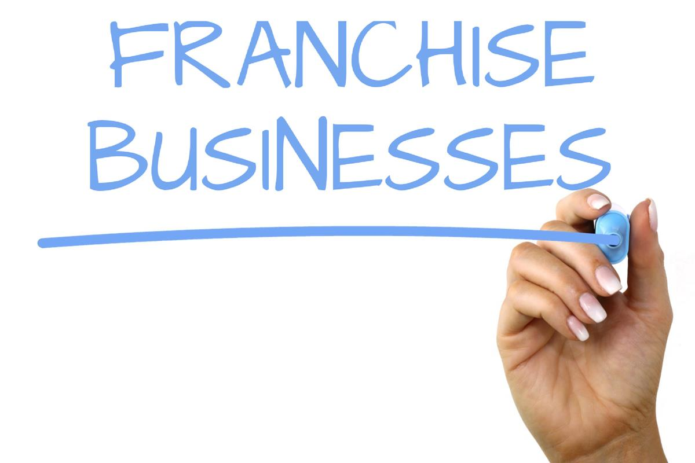

Why Business Franchising is a Good Option 
A monstrous measure of organizations are set up every year, except diversifying is often ignored as a potential chance for an individual to begin in business. Not only can establishment valuable open doors be accessible rapidly, but they also have the best achievement rate while managing new business companies.
Top 5 European Cities You Must See

Think of your dream vacation spot. Chances are that one or greater of those cities will make it for your list. Here is the list of 5 European towns to see for your life so upload them in your bucket listing right away and get equipped to take a holiday! Whether you were planning to visit these amazing places with your friends or family. You will really love it. And this travel guide will help you to choose wisely where to go.
How to take care of Gastrointestinal?
Nutrition of the patient is an integral component of treatment. The development of medical nutrition issues is a very important link in the complex of therapeutic measures for cancer patients. Adequate nutrition for the patient and correction of metabolic disorders after surgery or anticancer drug treatment are absolutely necessary.